“The simple graph has brought more information to the data analyst’s mind than any other device.” - John Tukey
This section is modified from the excellent Data visualisation and How to make any plot in ggplot2?, both are freely available online.
ggplot2 is the most elegant and aesthetically pleasing graphics framework available in R. It implements the grammar of graphics, a coherent system for describing and building graphs. It can significantly improve your plots’ quality and make you much more efficient in creating them. With that being said, the learning curve is steep because the way you make plots with ggplot2 is very different from base graphics making in R and in other languages. The distinctive feature of the ggplot2 framework is the way you make plots through adding layers. Here we will learn the steps of making a plot with ggplot2. 1
First of all, you need to tell R what data set to use in plotting. This is done by passing a data.frame object to the ggplot() function. Here the data frame object should contain all features needed to make the plot you want. Unlike base graphics in R and other languages, ggplot() does not take vectors as arguments.
In previous sections, you learn how to use the pipe operator (%>%) to pass a data set (tibble object) produced through data wrangling to the ggplot() function. This is exactly what you need to do in this step.
Let’s use the gapminder data set again. Now suppose we want to look at how GCP per capita (gdpPercap) changes from 1957 to 2007 for countries with names starting with the letter “C” in Asia or Europe. (I make up this subjective example, but hopefully, you can see the power of the dplyr package!) We can then pass the subset of gapminder data to ggplot to make a scatter plot between gdpPercap and year.
# Load libraries
library(dplyr)
library(ggplot2)
library(gapminder)
# Make a simple scatter plot
gapminder %>%
dplyr::filter( continent=="Asia" | continent=="Europe" ) %>%
dplyr::filter( substr(country,1,1)=="C" ) %>%
ggplot( aes(x=year, y=gdpPercap) ) +
geom_point()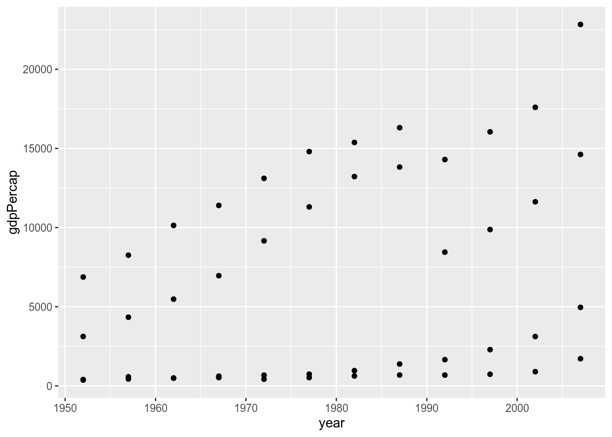
The plot above, however, can not distinguish countries as all points are plotted in the same manner. In fact, we would like to add country as the third variable to the two dimensional scatter plot. By doing so, we are mapping the scatter plot to an aesthetic. An aesthetic is a visual property of the objects in your plot. Aesthetics include things like the size, shape, color, or even transparency (alpha) of the points. You can display a point (like the one below) in different ways by changing the values of its aesthetic properties.
gapminder %>%
dplyr::filter( continent=="Asia" | continent=="Europe" ) %>%
dplyr::filter( substr(country,1,1)=="C" ) %>%
ggplot( aes(x=year, y=gdpPercap, color=country) ) +
geom_point()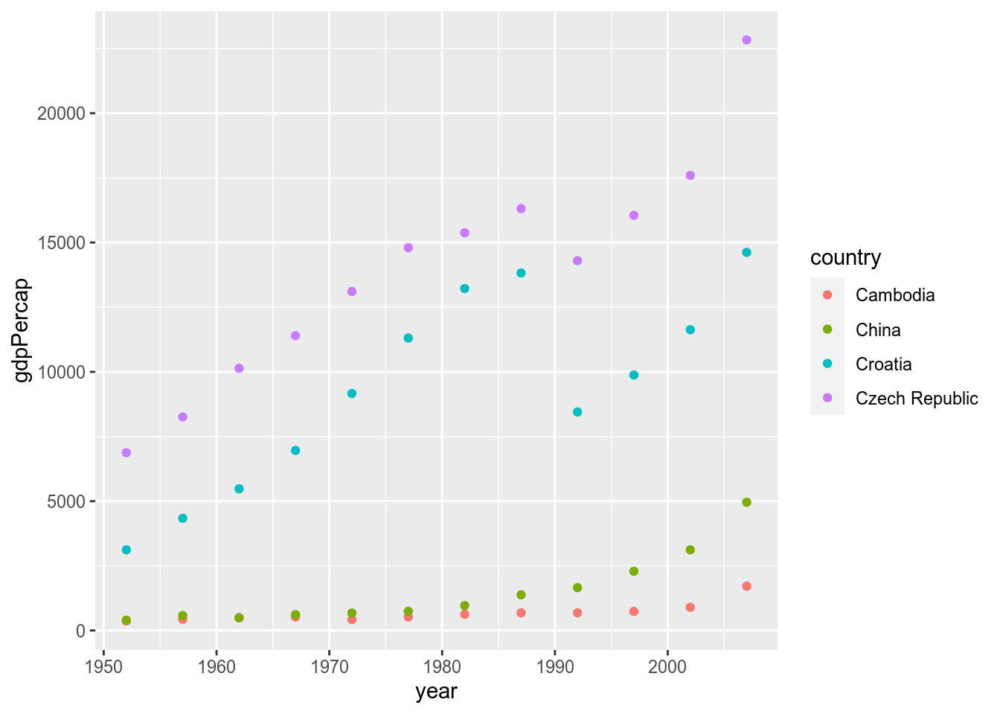
To map an aesthetic to a variable, associate the name of the aesthetic to the name of the variable inside aes(). ggplot2 will automatically assign a unique level of the aesthetic (here a unique color) to each unique value of the variable, a process known as scaling. ggplot2 will also add a legend that explains which levels correspond to which values.
In the above example, we mapped country to the color aesthetic, but we could have mapped country to the size aesthetic in the same way. In this case, the exact size of each point would reveal its class affiliation.
gapminder %>%
dplyr::filter( continent=="Asia" | continent=="Europe" ) %>%
dplyr::filter( substr(country,1,1)=="C" ) %>%
ggplot( aes(x=year, y=gdpPercap, size=country) ) +
geom_point()## Warning: Using size for a discrete variable is not advised.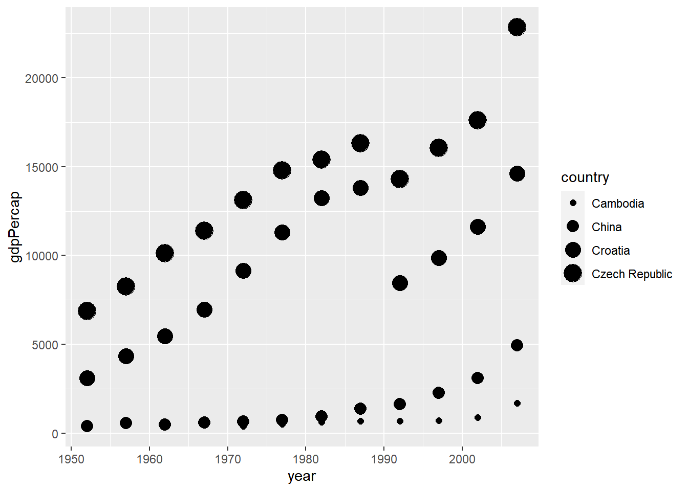
We get a warning here, because mapping an unordered variable (country) to an ordered aesthetic (size) is not a good idea. We can ignore the warning for now.
Similarly, we could map country to the shape or alpha aesthetic:
gapminder %>%
dplyr::filter( continent=="Asia" | continent=="Europe" ) %>%
dplyr::filter( substr(country,1,1)=="C" ) %>%
ggplot( aes(x=year, y=gdpPercap, shape=country) ) +
geom_point()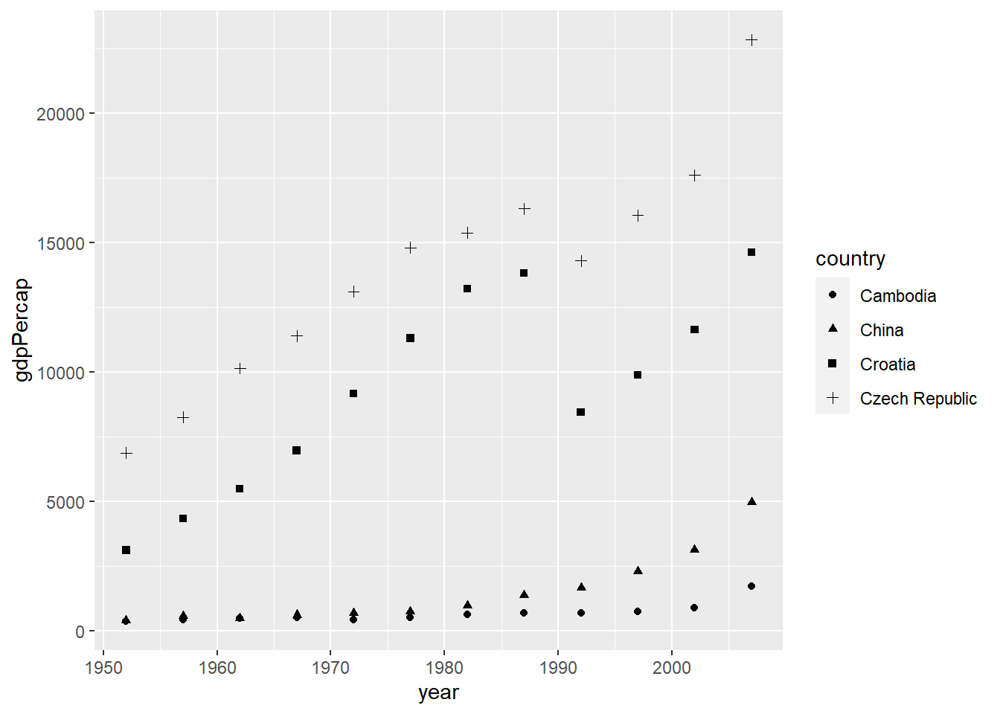
gapminder %>%
dplyr::filter( continent=="Asia" | continent=="Europe" ) %>%
dplyr::filter( substr(country,1,1)=="C" ) %>%
ggplot( aes(x=year, y=gdpPercap, alpha=country) ) +
geom_point()## Warning: Using alpha for a discrete variable is not advised.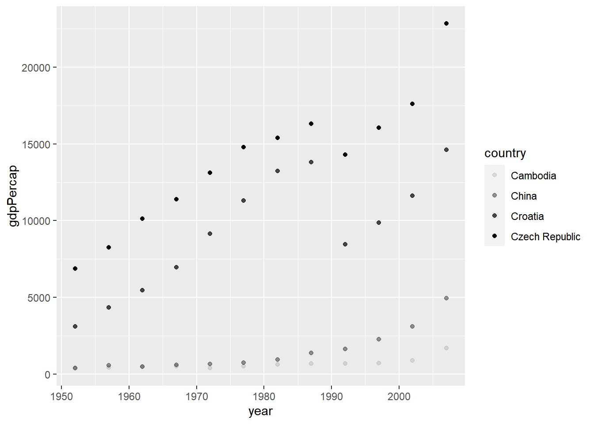
You can even combine more than one aesthetic:
gapminder %>%
dplyr::filter( continent=="Asia" | continent=="Europe" ) %>%
dplyr::filter( substr(country,1,1)=="C" ) %>%
ggplot( aes(x=year, y=gdpPercap, color=country, shape=country) ) +
geom_point()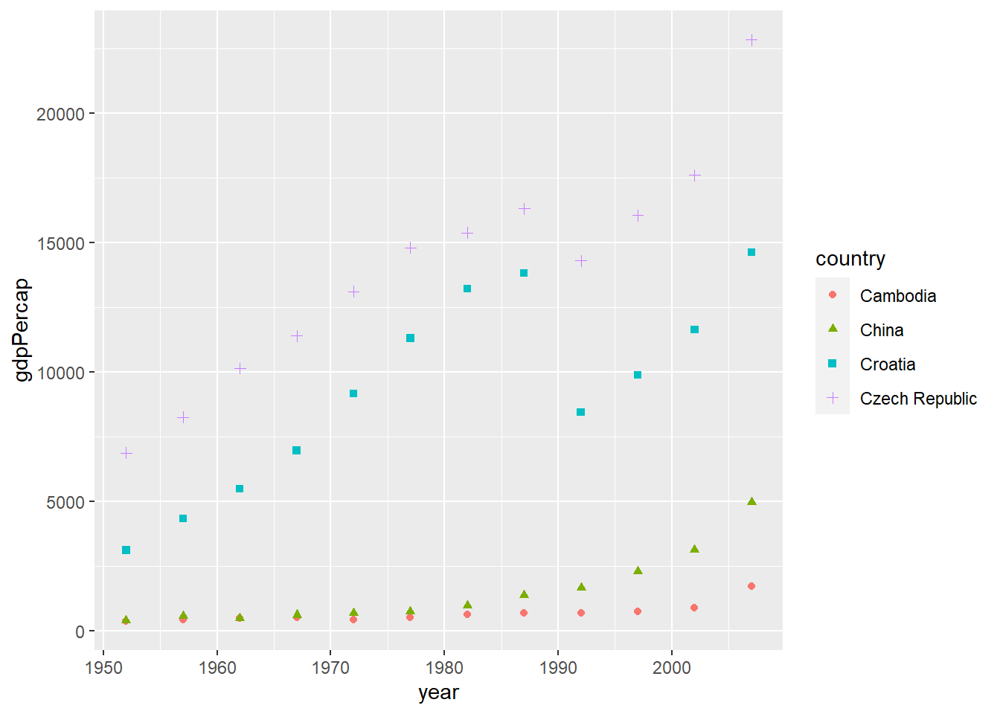
gapminder %>%
dplyr::filter( continent=="Asia" | continent=="Europe" ) %>%
dplyr::filter( substr(country,1,1)=="C" ) %>%
ggplot( aes(x=year, y=gdpPercap, color=country, shape=continent, size=country) ) +
geom_point()## Warning: Using size for a discrete variable is not advised.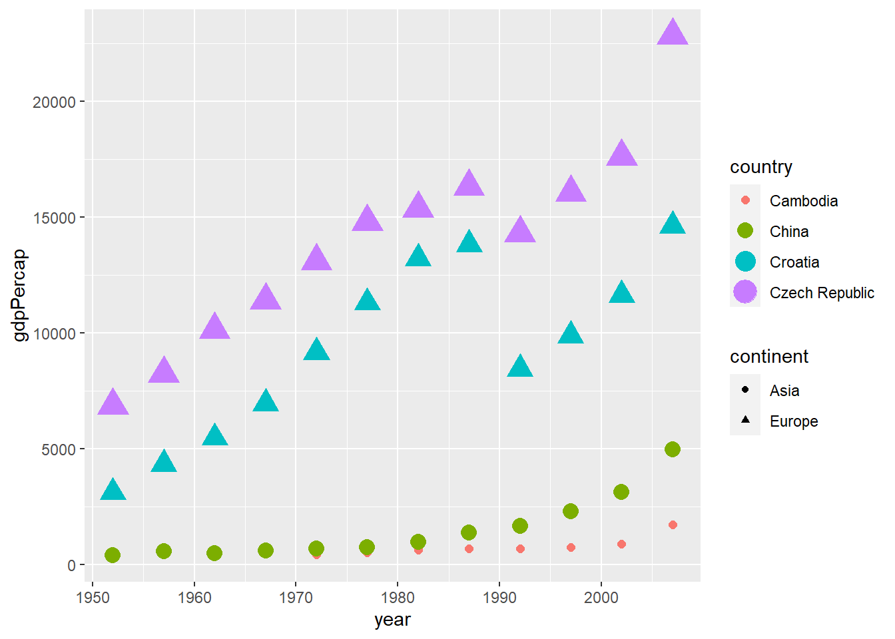
Once you map an aesthetic, ggplot2 takes care of the rest. It selects a reasonable scale to use with the aesthetic, and it constructs a legend that explains the mapping between levels and values.
In the previous steps, we make a scatter plot between gdpPercap and year. The plot uses a visual object to represent the data. In ggplot2 syntax, we say the plot uses a geometrical object or geom.
People often describe plots by the type of geom that the plot uses. For example, bar charts use bar geoms, line charts use line geoms, boxplots use boxplot geoms, and so on. ggplot2 provides over 40 geoms, and extension packages provide even more (see here for a sampling). The best way to get a comprehensive overview is ggplot2 cheatsheet. To learn more about any single geom, use ?, for example ?geom_smooth.
In ggplot2, you can use “+” to add another geom to the plot. In the plot below, we add a smoothed line to the scatter plots from the individual country.
gapminder %>%
dplyr::filter( continent=="Asia" | continent=="Europe" ) %>%
dplyr::filter( substr(country,1,1)=="C" ) %>%
ggplot( aes(x=year, y=gdpPercap, color=country) ) +
geom_point() +
geom_smooth()## `geom_smooth()` using method = 'loess' and formula 'y ~ x'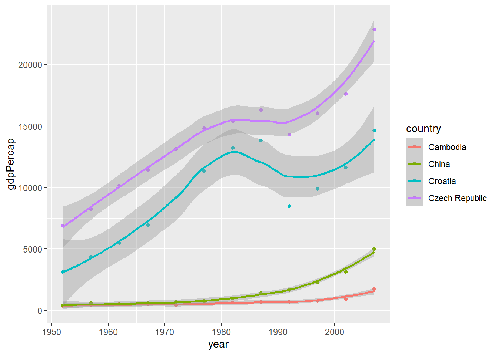
Now that you have drawn the main parts of the plot. You might want to add the plot’s main title and perhaps change the X and Y axis titles. This can be accomplished using the labs layer, meant for specifying the labels. However, manipulating the size, the color of the labels is the job of the ‘Theme’.
gapminder %>%
dplyr::filter( continent=="Asia" | continent=="Europe" ) %>%
dplyr::filter( substr(country,1,1)=="C" ) %>%
ggplot( aes(x=year, y=gdpPercap, color=country) ) +
geom_point() +
geom_smooth() +
labs(title="GDP per captia from 1957 to 2007", x="Year", y="GDP per captia")## `geom_smooth()` using method = 'loess' and formula 'y ~ x'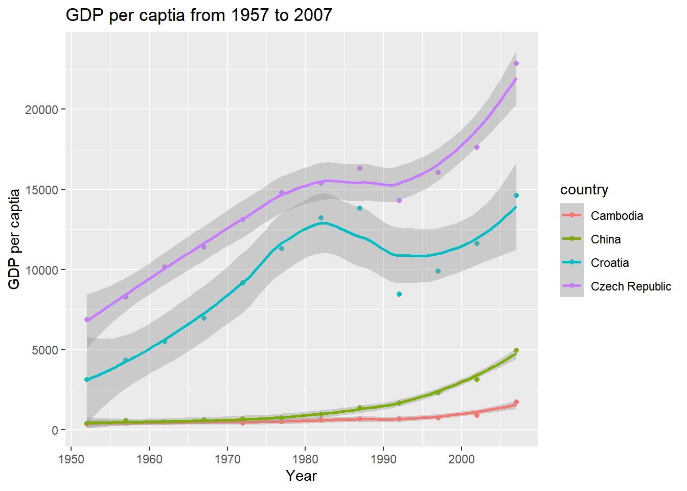
Very often, we want to customize our plot to make it looks better. For example we may need to increase the size of the labels and/or change the legend title. Adjusting the size of labels can be done using the theme() function by setting theplot.title, axis.text.x, and axis.text.y option. They need to be specified inside the element_text(). If you want to remove any of them, set it to element_blank(), and it will vanish entirely.
Adjusting the legend title is a bit tricky. If your legend is that of a color attribute and it varies based on a factor, you need to set the name using the scale_color_discrete() function, where the color part belongs to the color attribute and the discrete because the legend is based on a factor variable.
gapminder %>%
dplyr::filter( continent=="Asia" | continent=="Europe" ) %>%
dplyr::filter( substr(country,1,1)=="C" ) %>%
ggplot( aes(x=year, y=gdpPercap, color=country) ) +
geom_point() +
geom_smooth() +
labs(title="GDP per captia from 1957 to 2007", x="Year", y="GDP per captia") +
theme_bw() +
theme(plot.title=element_text(size=20, face="bold"),
axis.text.x=element_text(size=10),
axis.text.y=element_text(size=10),
axis.title.x=element_text(size=20),
axis.title.y=element_text(size=20)) +
scale_color_discrete(name="Country Name")## `geom_smooth()` using method = 'loess' and formula 'y ~ x'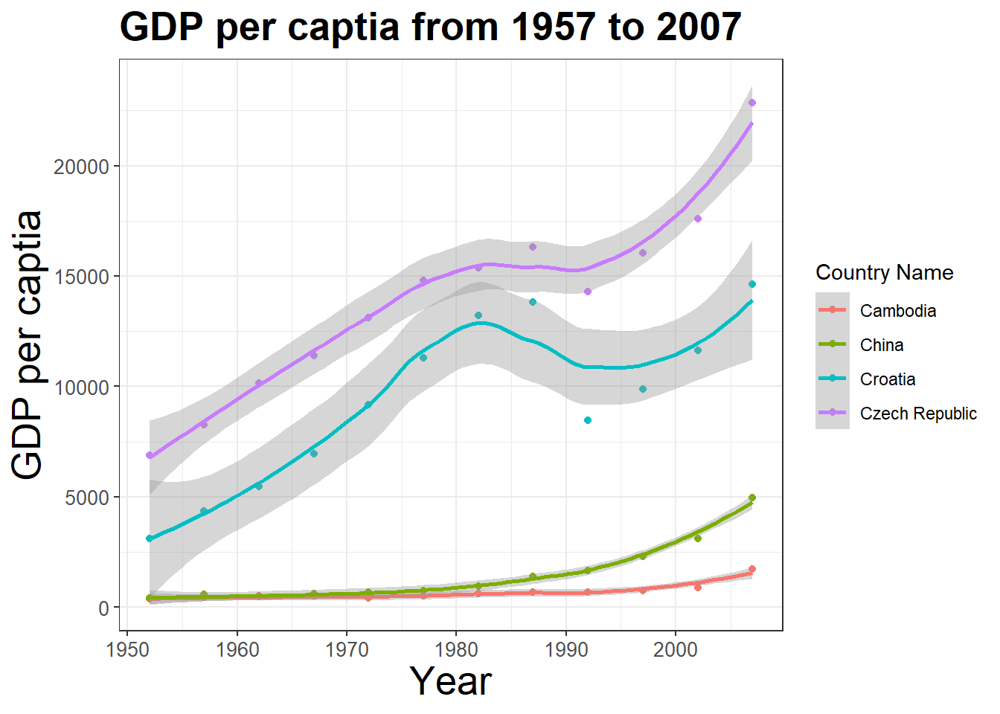
For categorical variables, it is particularly useful to split your plot into facets, subplots that each display one subset of the data. To facet your plot by a single variable, use facet_wrap(). The first argument of facet_wrap() should be a formula, which you create with ~ followed by a variable name. The variable that you pass to facet_wrap() should be discrete.
Let’s split our plot into two facets based on continent:
gapminder %>%
dplyr::filter( continent=="Asia" | continent=="Europe" ) %>%
dplyr::filter( substr(country,1,1)=="C" ) %>%
ggplot( aes(x=year, y=gdpPercap, color=country) ) +
geom_point() +
geom_smooth() +
labs(title="GDP per captia from 1957 to 2007", x="Year", y="GDP per captia") +
theme_bw() +
theme(plot.title=element_text(size=20, face="bold"),
axis.text.x=element_text(size=10),
axis.text.y=element_text(size=10),
axis.title.x=element_text(size=20),
axis.title.y=element_text(size=20)) +
scale_color_discrete(name="Country Name") +
facet_wrap( ~ continent)## `geom_smooth()` using method = 'loess' and formula 'y ~ x'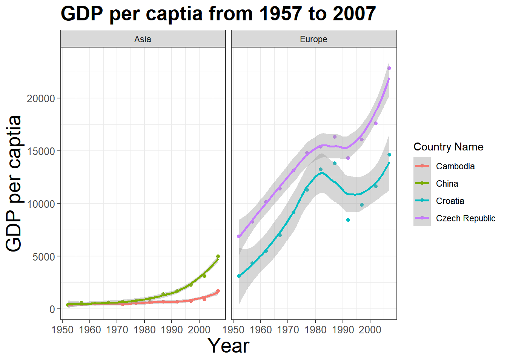
One way to change the layout the facets is specifying ncol and nrow options in the facet_wrap() function:
gapminder %>%
dplyr::filter( continent=="Asia" | continent=="Europe" ) %>%
dplyr::filter( substr(country,1,1)=="C" ) %>%
ggplot( aes(x=year, y=gdpPercap, color=country) ) +
geom_point() +
geom_smooth() +
labs(title="GDP per captia from 1957 to 2007", x="Year", y="GDP per captia") +
theme_bw() +
theme(plot.title=element_text(size=20, face="bold"),
axis.text.x=element_text(size=10),
axis.text.y=element_text(size=10),
axis.title.x=element_text(size=20),
axis.title.y=element_text(size=20)) +
scale_color_discrete(name="Country Name") +
facet_wrap( ~ continent, nrow=2)## `geom_smooth()` using method = 'loess' and formula 'y ~ x'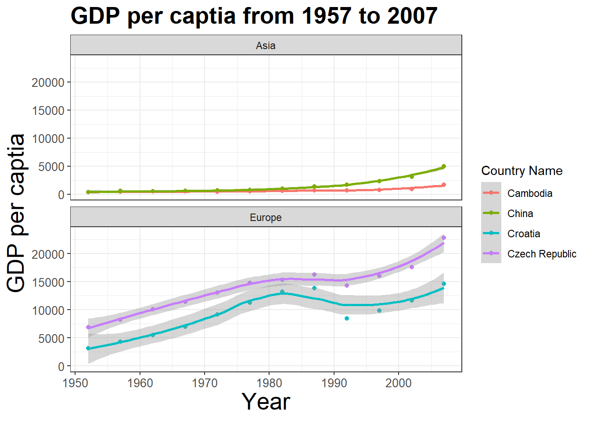
Finally, you can save the above plot uisng the ggsave() function. The default is to save the last plot that you displayed, using the size of the current graphics device. It’s smart enough to guess the type of graphics device from the extension. Let’s save the above figure to a local path D://class with a name myplot.png:
gapminder %>%
dplyr::filter( continent=="Asia" | continent=="Europe" ) %>%
dplyr::filter( substr(country,1,1)=="C" ) %>%
ggplot( aes(x=year, y=gdpPercap, color=country) ) +
geom_point() +
geom_smooth() +
labs(title="GDP per captia from 1957 to 2007", x="Year", y="GDP per captia") +
theme_bw() +
theme(plot.title=element_text(size=20, face="bold"),
axis.text.x=element_text(size=10),
axis.text.y=element_text(size=10),
axis.title.x=element_text(size=20),
axis.title.y=element_text(size=20)) +
scale_color_discrete(name="Country Name") +
facet_wrap( ~ continent, nrow=2)## `geom_smooth()` using method = 'loess' and formula 'y ~ x'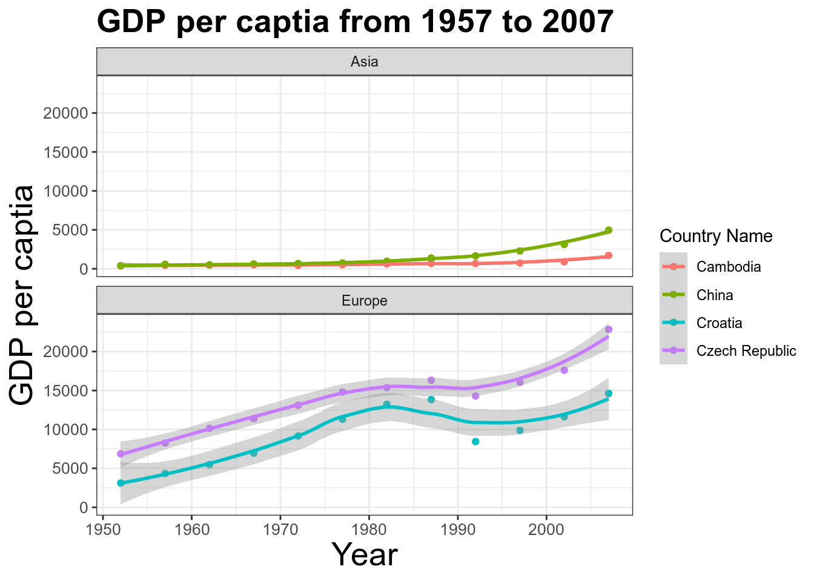
## Saving 7 x 5 in image
## `geom_smooth()` using method = 'loess' and formula 'y ~ x'You can also change the plot size (width and height) and resolution (dpi) by setting corresponding options. Use ?ggsave() for more.
# Save a ggplot object
plot1 <- gapminder %>%
dplyr::filter( continent=="Asia" | continent=="Europe" ) %>%
dplyr::filter( substr(country,1,1)=="C" ) %>%
ggplot( aes(x=year, y=gdpPercap, color=country) ) +
geom_point() +
geom_smooth() +
labs(title="GDP per captia from 1957 to 2007", x="Year", y="GDP per captia") +
theme_bw() +
theme(plot.title=element_text(size=20, face="bold"),
axis.text.x=element_text(size=10),
axis.text.y=element_text(size=10),
axis.title.x=element_text(size=20),
axis.title.y=element_text(size=20)) +
scale_color_discrete(name="Country Name") +
facet_wrap( ~ continent, nrow=2)
# And later save it to a stored figure
ggsave("myplot2.png", plot=plot1, width=20,
height=10, units="cm", dpi=400)## `geom_smooth()` using method = 'loess' and formula 'y ~ x'We have covered some basics but critical steps of making plots with ggplot2. There are many more features that we don’t have time to go through in just one section. You can explore the full functionality of ggplot2() by studying the further reading listed at the end.
To summarize, ggplot2’s grammar of graphics goes like:
ggplot(data = <DATA>) +
<GEOM_FUNCTION>(
mapping = aes(<MAPPINGS>),
stat = <STAT>,
position = <POSITION>
) +
<COORDINATE_FUNCTION> +
<FACET_FUNCTION>
ggsave() The template takes seven parameters, the bracketed words that appear in the template. We have no time to cover STAT, POSITION, and COORDINATE_FUNCTION, which you can learn by yourself following the further reading. In practice, you rarely need to supply all seven parameters to make a plot because ggplot2 will provide useful defaults for everything except the data, the mappings, and the geom function.
The seven parameters in the template compose the grammar of graphics, a formal system for building plots. The grammar of graphics is based on the insight that you can uniquely describe any plot as a combination of a data set, a geom, a set of mappings, a stat, a position adjustment, a coordinate system, and a faceting scheme.
With this, you can make any type of plot with ggplot2()!
A good way to learn ggplot2 is to browse plots (and scripts!) in the R Graph Gallery, such as:
Find the plots you want to mimic, edit and customize the scripts based on your need.
In our field, we plot 2-D maps with values very often. Again, you can learn how to do so with ggplot2, see ggplot2: Elegant Graphics for Data Analysis for more. But for now, let’s learn how to do this using the image.plot() function.
Install fields, maps, and RNetCDF packages if you haven’t:
Here we will use Jones (CRU) Air Temperature Anomalies Version 4: CRUTEM4, which contains global gridded (5°x5°) monthly anomalies of observed air temperature and combined observed air and marine temperature (HADCRU4) from the 1800s to near present. The current version is V4.2.0, which was put out on 5/9/2013. Download the monthly long term mean surface data, and move it to your working directory.
The data set is in the Network Common Data Form (NetCDF) format. NetCDF file is self-describing. A netCDF file includes information about the data it contains. It is widely used in Earth Science, Remote Sensing, and Environmental Science.
Before plotting, we need to read the NetCDF file using functions in the RNetCDF package.
## Warning: package 'fields' was built under R version 4.0.3## Loading required package: spam## Warning: package 'spam' was built under R version 4.0.3## Loading required package: dotCall64## Warning: package 'dotCall64' was built under R version 4.0.3## Loading required package: grid## Spam version 2.5-1 (2019-12-12) is loaded.
## Type 'help( Spam)' or 'demo( spam)' for a short introduction
## and overview of this package.
## Help for individual functions is also obtained by adding the
## suffix '.spam' to the function name, e.g. 'help( chol.spam)'.##
## Attaching package: 'spam'## The following objects are masked from 'package:base':
##
## backsolve, forwardsolve## See https://github.com/NCAR/Fields for
## an extensive vignette, other supplements and source code## Warning: package 'maps' was built under R version 4.0.3## Warning: package 'RNetCDF' was built under R version 4.0.3# Open the NetCDF file
ex.nc <- open.nc("air.mon.ltm.nc")
# Print the variables and attributes
print.nc(ex.nc)## netcdf classic {
## dimensions:
## time = UNLIMITED ; // (12 currently)
## lat = 36 ;
## lon = 72 ;
## nbnds = 2 ;
## variables:
## NC_FLOAT lat(lat) ;
## NC_CHAR lat:long_name = "Latitude" ;
## NC_CHAR lat:units = "degrees_north" ;
## NC_FLOAT lat:actual_range = 87.5, -87.5 ;
## NC_CHAR lat:standard_name = "latitude" ;
## NC_CHAR lat:axis = "Y" ;
## NC_CHAR lat:coordinate_defines = "point" ;
## NC_FLOAT lon(lon) ;
## NC_CHAR lon:long_name = "Longitude" ;
## NC_CHAR lon:units = "degrees_east" ;
## NC_FLOAT lon:actual_range = -177.5, 177.5 ;
## NC_CHAR lon:axis = "X" ;
## NC_CHAR lon:coordinate_defines = "point" ;
## NC_CHAR lon:standard_name = "longitude" ;
## NC_DOUBLE time(time) ;
## NC_CHAR time:units = "days since 1800-01-01 00:00:0.0" ;
## NC_CHAR time:long_name = "Time" ;
## NC_CHAR time:delta_t = "0000-01-00 00:00:00" ;
## NC_CHAR time:avg_period = "0030-00-00 00:00:00" ;
## NC_DOUBLE time:actual_range = -657073, -656739 ;
## NC_DOUBLE time:ltm_range = 58804, 69730 ;
## NC_CHAR time:axis = "T" ;
## NC_CHAR time:standard_name = "time" ;
## NC_CHAR time:coordinate_defines = "start" ;
## NC_CHAR time:climatology = "climatological_bounds" ;
## NC_DOUBLE climatological_bounds(nbnds, time) ;
## NC_CHAR climatological_bounds:long_name = "Climatology Boundaries" ;
## NC_CHAR climatological_bounds:units = "days since 1800-1-1 00:00:0.0" ;
## NC_FLOAT air(lon, lat, time) ;
## NC_CHAR air:dataset = "HADCRUT2V" ;
## NC_CHAR air:var_desc = "Air Temperature" ;
## NC_CHAR air:level_desc = "Surface" ;
## NC_CHAR air:statistic = "Long Term Mean" ;
## NC_FLOAT air:valid_range = -88, 88 ;
## NC_FLOAT air:actual_range = -70.2999954223633, 35.7000007629395 ;
## NC_CHAR air:units = "degC" ;
## NC_FLOAT air:missing_value = -9.96920996838687e+36 ;
## NC_CHAR air:long_name = "CRU Combined Surface/Marine Air Temperature Monthly Climatology" ;
## NC_SHORT air:precision = 2 ;
## NC_FLOAT air:add_offset = 0 ;
## NC_FLOAT air:scale_factor = 1 ;
## NC_CHAR air:cell_methods = "time: mean within months time: mean over years" ;
## NC_CHAR air:standard_name = "air_temperature" ;
##
## // global attributes:
## NC_CHAR :platform = "Surface" ;
## NC_CHAR :title = "CRU Combined Surface/Marine Air Temperature Climatology 1961-1990." ;
## NC_CHAR :history = "Created at NOAA-CIRES CDC by CAS 5/05" ;
## NC_CHAR :Conventions = "CF-1.0" ;
## NC_CHAR :References = "http://www.psl.noaa.gov/data/gridded/data.hadcru3.html" ;
## NC_CHAR :Source = "http://www.cru.uea.ac.uk/cru/data/temperature/" ;
## NC_CHAR :dataset_title = "HadCRU2" ;
## }Let’s plot the mean surface temperature in Jan. (Air_T_Jan). Since image.plot() requires an increasing order of both X and Y axes, we have to do some data transformation before plotting them.
# Original Lat is in decreasing order, we need to reverse it
Lat <- rev(Lat)
# Data transformation of Air_T_Jan
Air_T_Jan <- array(NA,dim=c(length(Lon), length(Lat)))
for(row in 1:length(Lat)){
Air_T_Jan[,row] <- Air_T[, (length(Lat)+1-row),1 ]
}Plot the matrix with image.plot():
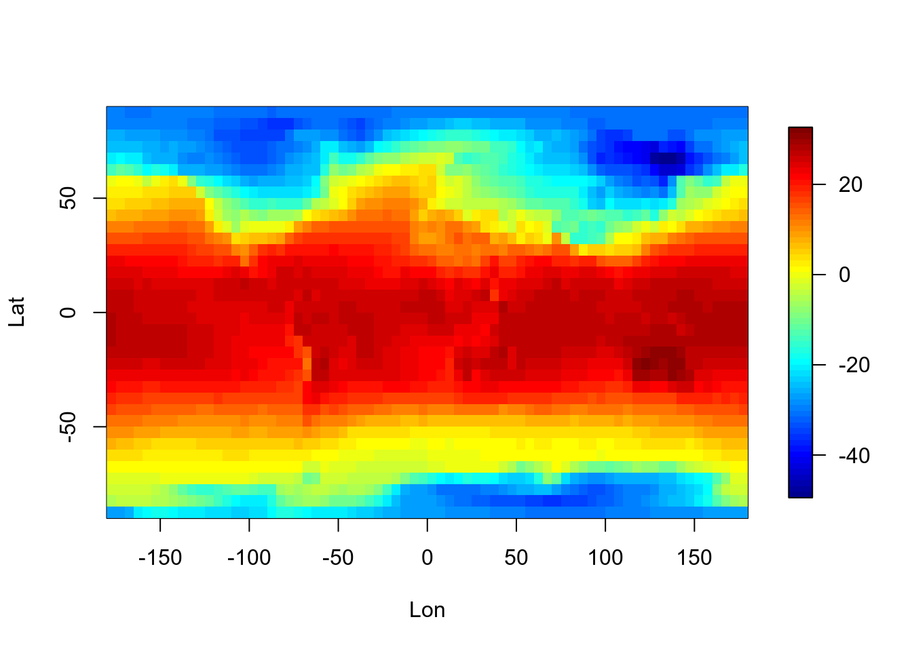
We can make the plot look better by setting more options:
# Set margins on bottom, left, top, right
par(mar=c(4.5,3,2,1))
# Plot
image.plot(Lon, Lat, Air_T_Jan,
horizontal=T, useRaster=T,
legend.shrink=0.75, axis.args=list(cex.axis = 1.25),
legend.width=1, legend.mar=2,
legend.args=list(text="Surface Temperature [degC]",cex=1.25),
xlab='',ylab='',midpoint=T, axes=F, ann=F
)
title(xlab="",cex.lab=1.25,font.lab=2)
axis(1,at=pretty(Lon),tck=-0.015,lwd=2,cex.axis=1.25,font=1)
title(ylab="",cex.lab=1.25,font.lab=2)
axis(2,at=pretty(Lat),tck=-0.015,lwd=2,cex.axis=1.25,font=1,las=1)
title(main=paste("Long term (1800-2020) mean surface temperature in Jan."),
cex.main=1,font.main=2)
# Add map
map('world',add=T,lwd=0.75,col="black")
# Add a box
box(lwd=2)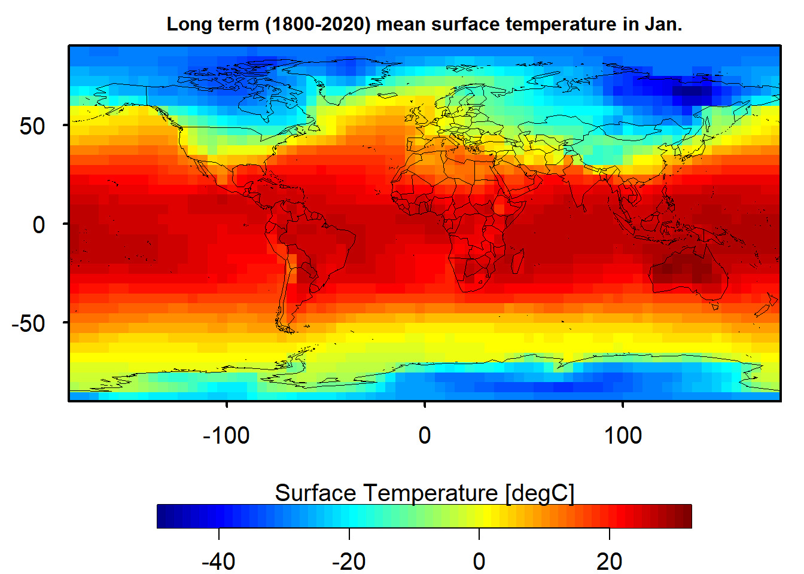
Use ?image.plot() to learn more about the options.
Finally, we can save the above plot as:
# Set the png format
png("Surface_T.png", width=8.5, height=6, units="in", res=400)
# Set margins on bottom, left, top, right
par(mar=c(4.5,3,2,1))
# Plot
image.plot(Lon, Lat, Air_T_Jan,
horizontal=T, useRaster=T,
legend.shrink=0.75, axis.args=list(cex.axis = 1.25),
legend.width=1, legend.mar=2,
legend.args=list(text="Surface Temperature [degC]",cex=1.25),
xlab='',ylab='',midpoint=T, axes=F, ann=F
)
title(xlab="",cex.lab=1.25,font.lab=2)
axis(1,at=pretty(Lon),tck=-0.015,lwd=2,cex.axis=1.25,font=1)
title(ylab="",cex.lab=1.25,font.lab=2)
axis(2,at=pretty(Lat),tck=-0.015,lwd=2,cex.axis=1.25,font=1,las=1)
title(main=paste("Long term (1800-2020) mean surface temperature in Jan."),
cex.main=1,font.main=2)
# Add map
map('world',add=T,lwd=0.75,col="black")
# Add a box
box(lwd=2)
# Close the png file to save the file
dev.off()## png
## 2Can you reproduce the following figure (myfirstplot.png, width 25 cm, height 20 cm, and dpi 400) with ggplot2?
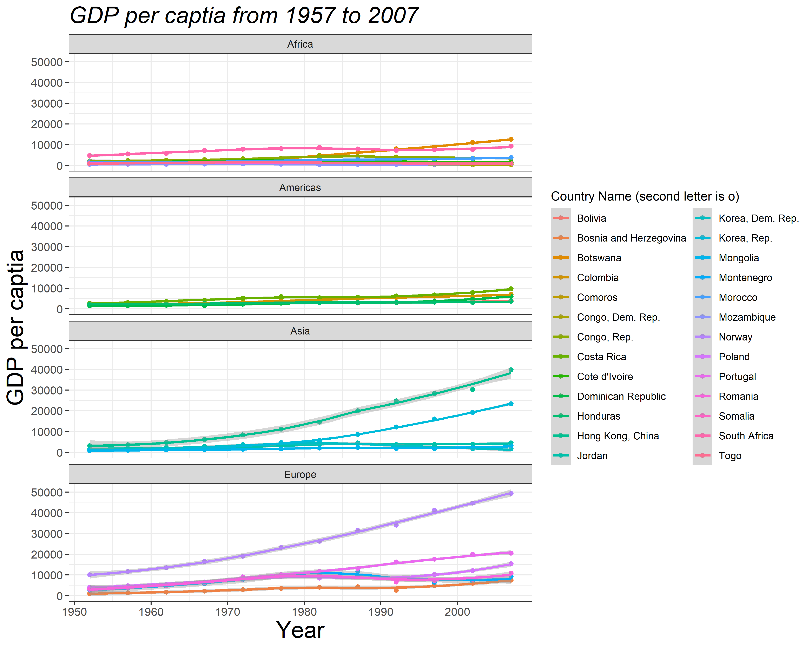
Download the monthly anomaly file (air.mon.anom.nc, ~ 21 MB) from Jones (CRU) Air Temperature Anomalies Version 4: CRUTEM4. Plot an image plot to show the surface air temperature monthly anomaly in the most recent month, change the plot title accordingly, and save you file as Air_monthly_anomaly_recent.png.